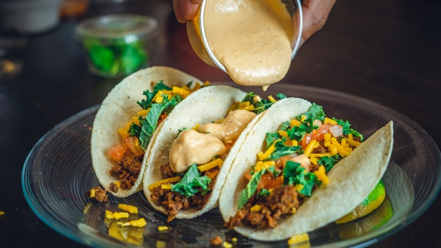

Home <<
Taco

A taco is a traditional Mexican dish consisting of a tortilla, typically made of corn or wheat, filled with a variety of savory ingredients.
Ingredients
- Tortilla: The foundation of a taco, providing a vessel for the filling. It can be soft or hard-shelled.
- Fillings: A wide array of options exist, including: MEat, Vegetables, Cheese and Sauces
- Garnish: Fresh toppings that add flavor and texture, such as cilantro, onions, and lime wedges.
Steps
- Preheat the oven to 180ºC (160ºC for fan assisted ovens), gas mark 4. Rub 1 1/2 tablespoon of the seasoning mix over the pork joint. Heat the oil in a medium heavy based casserole dish or ovenproof pan over a medium heat and add the pork. Cook for 3-4 minutes, turning so each side is browned. Remove and discard the string.
- Add the pineapple juice and water to the pan with the remaining seasoning mix, bring to the boil and turn down to a simmer, cover and cook in the oven for 3 hours until the pork is tender and falling apart.
- Drain the liquid from the pork reserving 50ml. Shred the pork, using 2 forks and stir together with the reserved liquid.
- Stir the rice, beans and most of the coriander together in a medium bowl. Mix the red onion, lime juice and salt together in a small bowl. Allow them to stand for 5 minutes to allow the flavours to infuse.
- Fill the soft tortillas with the rice, pulled pork, sliced pineapple, pickled red onions and garnish with the remaining coriander.